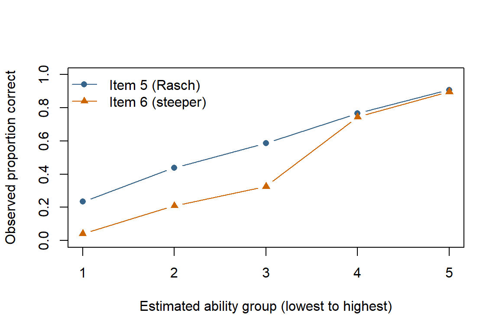

The Rasch model describes the probability that a person answers an item correctly using only two quantities: the person’s ability, \(\theta\), and the item’s difficulty, \(b\):
Because every item shares the same slope, a person’s raw score carries all the information the model uses about their ability. That property is useful, but it depends on assumptions. Here we fit a Rasch model to synthetic data with deliberately built-in violations and check whether simple diagnostics find them.
Assumption
Meaning
Checked here?
Unidimensionality
One latent ability explains performance on all items.
Yes, residual correlations
Local independence
After accounting for ability, responses to different items are unrelated.
Yes, Yen’s \(Q_3\)
Equal discrimination
Every item’s probability curve has the same slope.
Yes, item slopes and a plot
Monotonic logistic form
Higher ability always means a higher probability of success, following the logistic curve.
Indirectly, through the plot
No guessing
Very low-ability people have a probability of success near zero.
No
Invariance
Item difficulties are the same across groups (no differential item functioning, or DIF).
No
33.1 Generate Example Data
These are synthetic responses from 1,000 simulated people to 10 right/wrong items, not results from a real test. Most items follow the Rasch model exactly. We build in two violations:
Item 6 has a much steeper curve (discrimination 2.5 instead of 1).
Items 3 and 4 share an extra factor unrelated to ability, as if both asked about the same reading passage.
Each row of responses is a person and each column is an item; 1 means correct. outer() computes \(\theta - b\) for every person-item combination, plogis() converts those logits to probabilities, and rbinom() draws 0/1 responses. The output shows the proportion correct for each item. The true ability and passage values are used only to generate data; the analysis below never sees them.
33.2 Fit the Rasch Model
A Rasch model can be fit as a logistic mixed model: item effects are fixed, and person abilities are random effects drawn from a normal distribution (De Boeck et al., 2011). glmer() from the lme4 package expects one row per person-item response, so we first reshape the data.
long<-data.frame( person =factor(rep(1:n_people, times =n_items)), item =factor(rep(colnames(responses), each =n_people)), correct =as.vector(responses))rasch_fit<-glmer(correct~0+item+(1|person), data =long, family =binomial, control =glmerControl(optimizer ="bobyqa"))est_difficulty<--fixef(rasch_fit)names(est_difficulty)<-colnames(responses)round(cbind(true =difficulty, estimated =est_difficulty), 2)
In the formula, 0 + item gives each item its own intercept, and (1 | person) gives each person a random ability. Item intercepts are easiness values, so we reverse their sign to obtain difficulties. The estimated ability standard deviation is 0.98; the data were generated with a standard deviation of 1.
Most difficulty estimates are close to their true values. Items 3 and 4 are furthest off, because the model cannot represent their shared passage factor. Difficulty estimates alone will not reveal every violation, though; item 6’s steeper slope barely shifts its difficulty, so we need targeted checks.
33.3 Check Equal Discrimination
To check whether items have similar slopes, we first extract each person’s estimated ability. We then fit a separate logistic regression for each item, predicting that item’s responses from estimated ability.
Code
est_ability<-ranef(rasch_fit)$person[, 1]item_slopes<-sapply(colnames(responses), function(item){slope_fit<-glm(responses[, item]~est_ability, family =binomial)coef(slope_fit)[["est_ability"]]})slope_ratio<-item_slopes/median(item_slopes)round(rbind(slope =item_slopes, ratio_to_median =slope_ratio), 2)
Estimated abilities are pulled toward the average, so all of these slopes are larger than 1. The useful comparison is between items. Item 6’s slope is 1.7 times the median item slope; the other items range from 0.88 to 1.1 times the median. A Rasch model assumes these slopes are equal, so item 6 is the clear outlier.
The plot below groups people into five equal-sized ability groups and shows the observed proportion correct for item 5 and item 6, which have similar difficulties.
Code
ability_group<-cut(est_ability, breaks =quantile(est_ability, probs =seq(0, 1, 0.2)), include.lowest =TRUE, labels =FALSE)item5_by_group<-tapply(responses[, "item05"], ability_group, mean)item6_by_group<-tapply(responses[, "item06"], ability_group, mean)plot(1:5, item5_by_group, type ="b", pch =16, col ="steelblue4", ylim =c(0, 1), xaxt ="n", xlab ="Estimated ability group (lowest to highest)", ylab ="Observed proportion correct")lines(1:5, item6_by_group, type ="b", pch =17, col ="darkorange3")axis(1, at =1:5)legend("topleft", legend =c("Item 5 (Rasch)", "Item 6 (steeper)"), col =c("steelblue4", "darkorange3"), pch =c(16, 17), lty =1, bty ="n")

Both curves increase, consistent with monotonicity, but item 6 separates low- and high-ability people much more sharply. Under the Rasch model, item curves differ only in location, so they should look parallel.
33.4 Check Local Independence and Unidimensionality
If the model is adequate, what remains after subtracting each expected response from each observed response should be close to random noise. Yen’s \(Q_3\) is the correlation between two items’ residuals (Yen, 1984).
item03_item04 average max_minus_average
0.24 -0.07 0.31
Residual correlations are slightly negative on average, even for well-fitting data, so Christensen, Makransky, and Horton recommend judging each \(Q_3\) against the average rather than against zero (Christensen et al., 2017). Items 3 and 4 have a residual correlation of 0.24, which is 0.31 above the average. They share something beyond ability: the simulated passage. No single critical value fits every test; the same article recommends simulating critical values for each data set.
A related check looks for structure in the standardized residuals. If one ability explains the responses, no strong second pattern should remain.
The first set of values are eigenvalues: the size of each leftover pattern in the residuals. The second set shows how strongly each item is associated with the largest pattern. Items 3 and 4 have the largest loadings, with the same sign. The signs themselves are arbitrary. The extra factor we built in looks like a small second dimension.
33.5 Interpretation
Each built-in violation was flagged by the check aimed at it: item 6 had an unusually steep slope, and items 3 and 4 showed residual dependence. The other items behaved as expected. In practice, a flagged item calls for a content review before you decide what to do with it. For example, you might revise or remove the item, combine a dependent pair into a single scored unit, or choose a model that allows different slopes.
Some limitations apply. These checks use estimated abilities, which are pulled toward the average, so slopes are best compared with each other. Rasch practitioners also commonly use infit and outfit mean-square statistics; with shrunken ability estimates like these, they tend to fall below 1 and are hard to read, so dedicated Rasch software is a better choice for them. This page does not test guessing or invariance across groups (DIF), and diagnostics are evidence, not proof, that the assumptions hold.
# Rasch Model Assumptions {#sec-example-rasch-assumptions}The **Rasch model** describes the probability that a person answers an item correctly using only two quantities: the person's ability, $\theta$, and the item's difficulty, $b$:$$P(\text{correct}) = \frac{1}{1 + e^{-(\theta - b)}}$$Because every item shares the same slope, a person's raw score carries all the information the model uses about their ability. That property is useful, but it depends on assumptions. Here we fit a Rasch model to synthetic data with deliberately built-in violations and check whether simple diagnostics find them.| Assumption | Meaning | Checked here? || ---| ---| ---|| Unidimensionality | One latent ability explains performance on all items. | Yes, residual correlations || Local independence | After accounting for ability, responses to different items are unrelated. | Yes, Yen's $Q_3$ || Equal discrimination | Every item's probability curve has the same slope. | Yes, item slopes and a plot || Monotonic logistic form | Higher ability always means a higher probability of success, following the logistic curve. | Indirectly, through the plot || No guessing | Very low-ability people have a probability of success near zero. | No || Invariance | Item difficulties are the same across groups (no differential item functioning, or DIF). | No |## Generate Example DataThese are synthetic responses from 1,000 simulated people to 10 right/wrong items, not results from a real test. Most items follow the Rasch model exactly. We build in two violations:- **Item 6** has a much steeper curve (discrimination 2.5 instead of 1).- **Items 3 and 4** share an extra factor unrelated to ability, as if both asked about the same reading passage.```{r}#| label: ex-rasch-dataset.seed(2026)n_people <-1000n_items <-10ability <-rnorm(n_people)difficulty <-seq(-2, 2, length.out = n_items)discrimination <-rep(1, n_items)discrimination[6] <-2.5passage <-rnorm(n_people)logits <-outer(ability, difficulty, "-") *rep(discrimination, each = n_people)logits[, 3] <- logits[, 3] +2* passagelogits[, 4] <- logits[, 4] +2* passageresponses <-matrix(rbinom(length(logits), size =1, prob =plogis(logits)),nrow = n_people)colnames(responses) <-sprintf("item%02d", 1:n_items)round(colMeans(responses), 2)```Each row of `responses` is a person and each column is an item; 1 means correct. `outer()` computes $\theta - b$ for every person-item combination, `plogis()` converts those logits to probabilities, and `rbinom()` draws 0/1 responses. The output shows the proportion correct for each item. The true `ability` and `passage` values are used only to generate data; the analysis below never sees them.## Fit the Rasch ModelA Rasch model can be fit as a logistic mixed model: item effects are fixed, and person abilities are random effects drawn from a normal distribution [(De Boeck et al., 2011)](https://doi.org/10.18637/jss.v039.i12). `glmer()` from the `lme4` package expects one row per person-item response, so we first reshape the data.```{r}#| label: ex-rasch-fitlibrary(lme4)long <-data.frame(person =factor(rep(1:n_people, times = n_items)),item =factor(rep(colnames(responses), each = n_people)),correct =as.vector(responses))rasch_fit <-glmer( correct ~0+ item + (1| person),data = long,family = binomial,control =glmerControl(optimizer ="bobyqa"))est_difficulty <--fixef(rasch_fit)names(est_difficulty) <-colnames(responses)round(cbind(true = difficulty, estimated = est_difficulty), 2)ability_sd <-attr(VarCorr(rasch_fit)$person, "stddev")round(ability_sd, 2)```In the formula, `0 + item` gives each item its own intercept, and `(1 | person)` gives each person a random ability. Item intercepts are *easiness* values, so we reverse their sign to obtain difficulties. The estimated ability standard deviation is `r round(ability_sd, 2)`; the data were generated with a standard deviation of 1.Most difficulty estimates are close to their true values. Items 3 and 4 are furthest off, because the model cannot represent their shared passage factor. Difficulty estimates alone will not reveal every violation, though; item 6's steeper slope barely shifts its difficulty, so we need targeted checks.## Check Equal DiscriminationTo check whether items have similar slopes, we first extract each person's estimated ability. We then fit a separate logistic regression for each item, predicting that item's responses from estimated ability.```{r}#| label: ex-rasch-slopesest_ability <-ranef(rasch_fit)$person[, 1]item_slopes <-sapply(colnames(responses), function(item) { slope_fit <-glm(responses[, item] ~ est_ability, family = binomial)coef(slope_fit)[["est_ability"]]})slope_ratio <- item_slopes /median(item_slopes)round(rbind(slope = item_slopes, ratio_to_median = slope_ratio), 2)```Estimated abilities are pulled toward the average, so all of these slopes are larger than 1. The useful comparison is between items. Item 6's slope is `r round(slope_ratio[["item06"]], 1)` times the median item slope; the other items range from `r round(min(slope_ratio[-6]), 2)` to `r round(max(slope_ratio[-6]), 2)` times the median. A Rasch model assumes these slopes are equal, so item 6 is the clear outlier.The plot below groups people into five equal-sized ability groups and shows the observed proportion correct for item 5 and item 6, which have similar difficulties.```{r}#| label: ex-rasch-plot#| fig-width: 6#| fig-height: 4#| fig-alt: "Observed proportion correct across five ability groups. Item 6 rises from near zero to near one much more steeply than item 5."ability_group <-cut( est_ability,breaks =quantile(est_ability, probs =seq(0, 1, 0.2)),include.lowest =TRUE,labels =FALSE)item5_by_group <-tapply(responses[, "item05"], ability_group, mean)item6_by_group <-tapply(responses[, "item06"], ability_group, mean)plot(1:5, item5_by_group, type ="b", pch =16, col ="steelblue4",ylim =c(0, 1), xaxt ="n",xlab ="Estimated ability group (lowest to highest)",ylab ="Observed proportion correct")lines(1:5, item6_by_group, type ="b", pch =17, col ="darkorange3")axis(1, at =1:5)legend("topleft", legend =c("Item 5 (Rasch)", "Item 6 (steeper)"),col =c("steelblue4", "darkorange3"), pch =c(16, 17), lty =1, bty ="n")```Both curves increase, consistent with monotonicity, but item 6 separates low- and high-ability people much more sharply. Under the Rasch model, item curves differ only in location, so they should look parallel.## Check Local Independence and UnidimensionalityIf the model is adequate, what remains after subtracting each expected response from each observed response should be close to random noise. **Yen's $Q_3$** is the correlation between two items' residuals [(Yen, 1984)](https://doi.org/10.1177/014662168400800201).```{r}#| label: ex-rasch-q3expected <-plogis(outer(est_ability, est_difficulty, "-"))residuals_matrix <- responses - expectedq3 <-cor(residuals_matrix)diag(q3) <-NAaverage_q3 <-mean(q3, na.rm =TRUE)max_q3 <-max(q3, na.rm =TRUE)round(c(item03_item04 = q3["item03", "item04"],average = average_q3,max_minus_average = max_q3 - average_q3), 2)```Residual correlations are slightly negative on average, even for well-fitting data, so Christensen, Makransky, and Horton recommend judging each $Q_3$ against the average rather than against zero [(Christensen et al., 2017)](https://doi.org/10.1177/0146621616677520). Items 3 and 4 have a residual correlation of `r round(q3["item03", "item04"], 2)`, which is `r round(max_q3 - average_q3, 2)` above the average. They share something beyond ability: the simulated passage. No single critical value fits every test; the same article recommends simulating critical values for each data set.A related check looks for structure in the standardized residuals. If one ability explains the responses, no strong second pattern should remain.```{r}#| label: ex-rasch-residual-pcastandardized_residuals <- residuals_matrix /sqrt(expected * (1- expected))residual_pca <-eigen(cor(standardized_residuals))round(residual_pca$values[1:3], 2)round(setNames(residual_pca$vectors[, 1], colnames(responses)), 2)```The first set of values are eigenvalues: the size of each leftover pattern in the residuals. The second set shows how strongly each item is associated with the largest pattern. Items 3 and 4 have the largest loadings, with the same sign. The signs themselves are arbitrary. The extra factor we built in looks like a small second dimension.## InterpretationEach built-in violation was flagged by the check aimed at it: item 6 had an unusually steep slope, and items 3 and 4 showed residual dependence. The other items behaved as expected. In practice, a flagged item calls for a content review before you decide what to do with it. For example, you might revise or remove the item, combine a dependent pair into a single scored unit, or choose a model that allows different slopes.Some limitations apply. These checks use estimated abilities, which are pulled toward the average, so slopes are best compared with each other. Rasch practitioners also commonly use infit and outfit mean-square statistics; with shrunken ability estimates like these, they tend to fall below 1 and are hard to read, so dedicated Rasch software is a better choice for them. This page does not test guessing or invariance across groups (DIF), and diagnostics are evidence, not proof, that the assumptions hold.For the modeling approach, see [Bates et al. (2015)](https://doi.org/10.18637/jss.v067.i01) on `lme4` and [De Boeck et al. (2011)](https://doi.org/10.18637/jss.v039.i12) on fitting item response models with it.